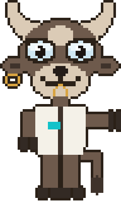
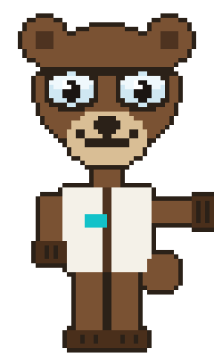
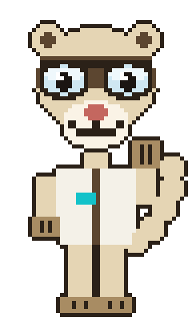

Neither of them has run it. That is the entire reason this site exists.

No test has published a result yet. The method is built, the Field Guide is written, and the first verdict is not out.
Put your name down now and it lands in your inbox the day it does — one strategy, tested properly, with the assumptions behind it and the condition that changes the answer. No tips, no signals, nothing you have to act on. Every issue shows its working.
Unsubscribe in one click. We never sell or share your address. See the disclaimer.